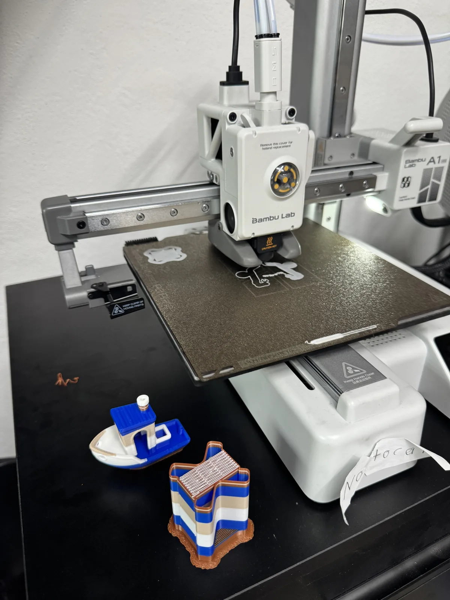
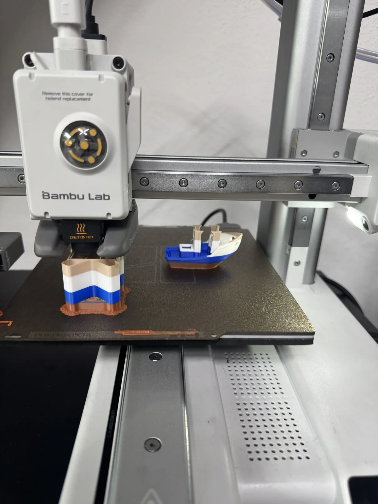
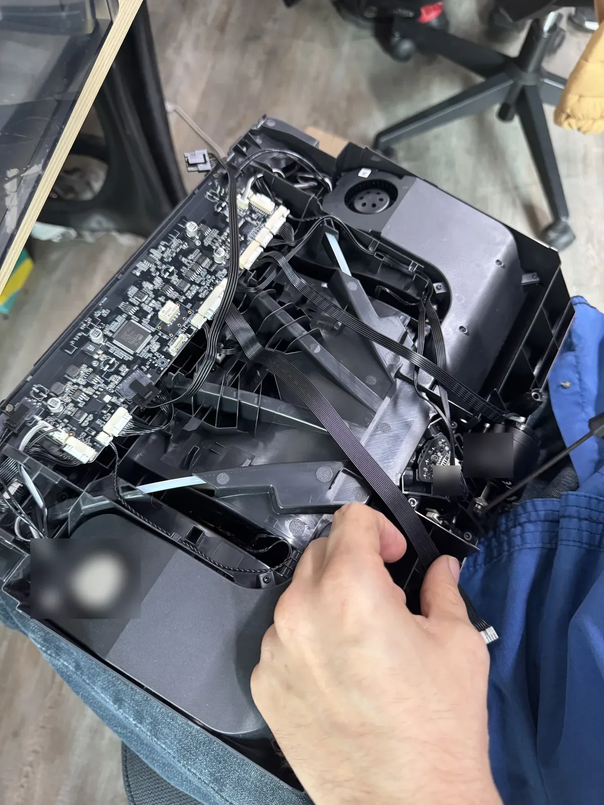
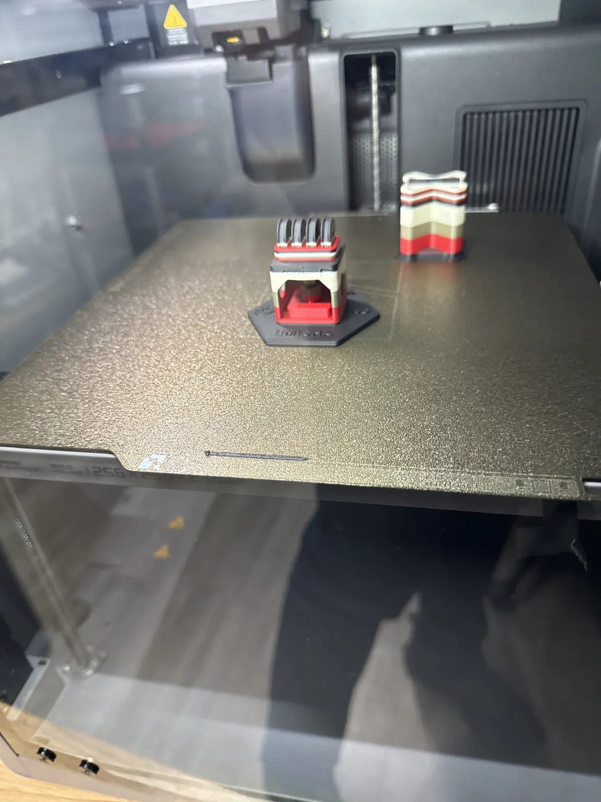
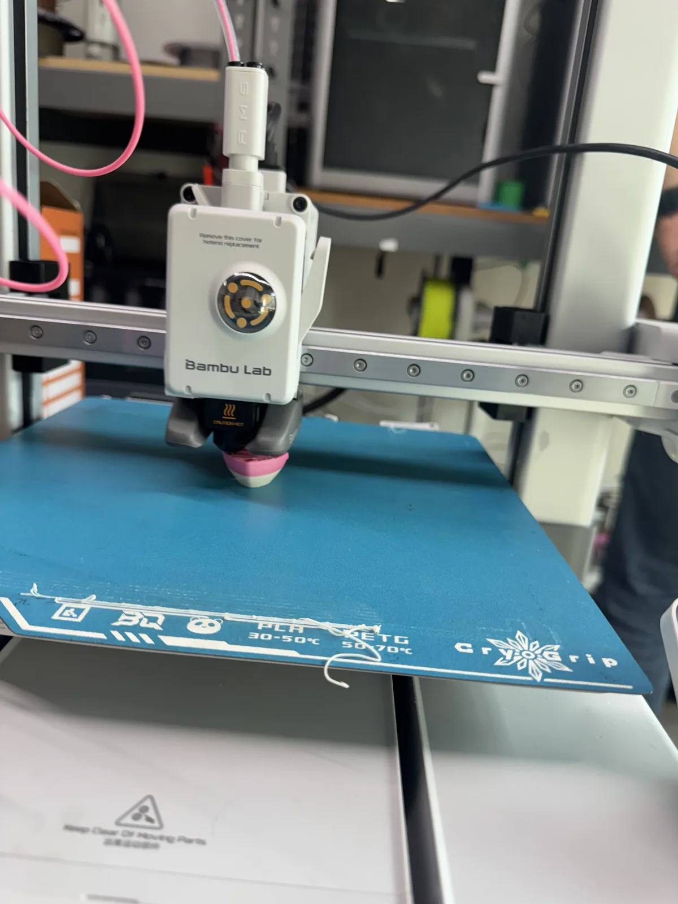
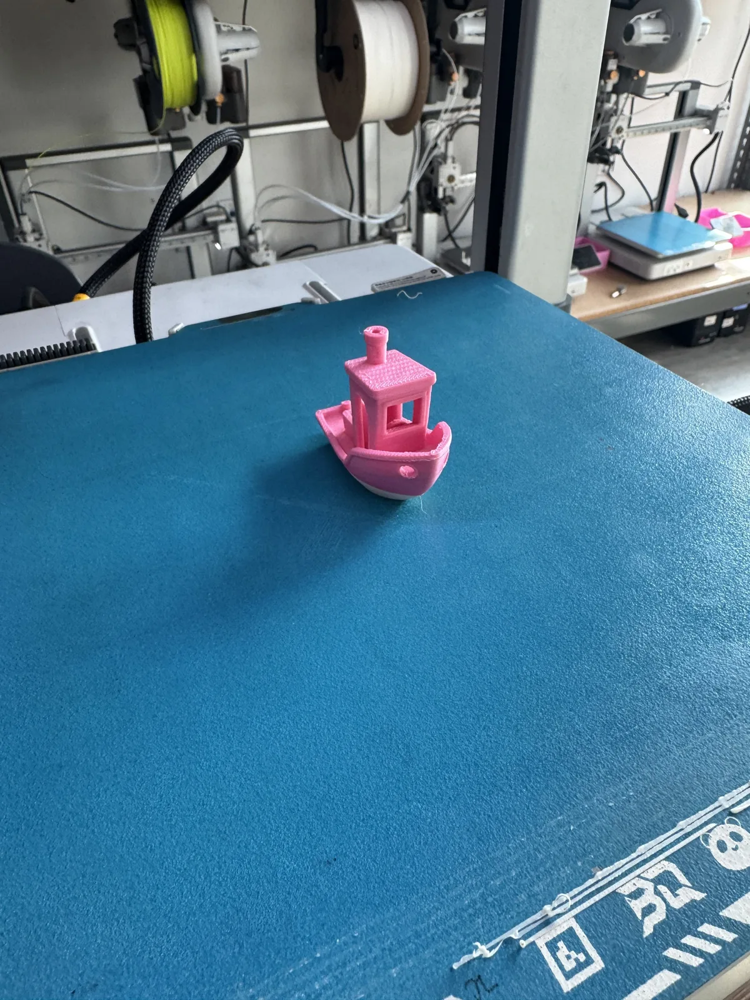

Antes de llevar tu impresora al taller: tres casos que no eran falla
· Caso del taller
No todas las impresoras que llegan al taller están descompuestas. A veces la falla es un ajuste, un cable o un archivo. Preferimos que no pagues una reparación que no necesitas, así que aquí van tres casos reales y lo que puedes revisar tú antes de traerla.

Caso 1: la A1 mini que «no usaba» los carretes extra
Llegó con el reporte de falla en los carretes extra: la impresora solo imprimía con uno. Revisamos el AMS lite y el cambio de color, y todo funcionaba. El detalle estaba en el archivo: la pieza venía pintada de un solo color, así que la impresora nunca tenía motivo para cambiar de carrete.
Para que una A1 mini imprima en varios colores, el archivo tiene que traer esos colores asignados desde Bambu Studio u Orca. Le dejamos en la tarjeta SD dos archivos multicolor para que lo comprobaran en casa. Fuera de eso, la impresora no tenía ninguna falla.
Revísalo tú: abre el archivo en el programa de laminado y fíjate si las piezas tienen más de un color asignado. Si todo está en el mismo color, la impresora va a usar un solo carrete aunque tenga cuatro cargados.

Caso 2: la P2S nueva que fallaba mucho
Una P2S nueva que había tenido una racha mala: un atasco en el extrusor, varios intentos de destaparla y al final la impresora desarmada, sin saber bien cómo volver a montarla. Es algo que le pasa a cualquiera, y abrirla para quitar el atasco fue una decisión razonable.
En el taller la revisamos completa. El AMS estaba desarmado, pero no tenía ningún atasco ni daño. Lo que sí encontramos fue el cable de un ventilador desconectado, seguramente desde que se abrió. Lo conectamos, armamos todo, y las impresiones de prueba salieron sin problema.
Revísalo tú: si abriste la impresora y después de cerrarla empezó a fallar, antes de pensar en refacciones revisa que cada conector esté completo en su lugar, sobre todo los de ventiladores y sensores. Toma fotos antes de desconectar cualquier cosa; te ahorran mucho al volver a armar. Y si no te sientes seguro, traerla en ese punto es mejor que forzar piezas.


Caso 3: la A1 con error de nivelación
Una A1 que desde hacía unos días marcaba error en la nivelación de cama y a veces en el eje Z. Además se veían hilos de filamento en la banda del eje X. Sonaba a falla mecánica, pero lo que necesitaba era más sencillo: correr la nivelación de cama y la rutina de mantenimiento automático de la impresora. Con eso volvió a imprimir normal.
Revísalo tú: con la impresora apagada, quita los hilos de filamento que veas en las bandas y limpia la boquilla. Luego corre la calibración completa desde la pantalla. Si el error vuelve después de eso, ya vale la pena una revisión.


La lista corta antes de agendar
- Reinicia y actualiza el firmware. Muchas fallas raras se van con una actualización.
- Corre la calibración completa desde la pantalla.
- Revisa el archivo: colores, temperatura y tipo de filamento correctos.
- Revisa conectores si abriste algo, aunque sea una tapa.
- Prueba con otro filamento, de preferencia uno seco y de un carrete que ya te haya funcionado.
- Anota el código del error. Con el código podemos decirte por WhatsApp si conviene traerla o no.
Si nada de eso funciona, ahí sí tráela. Y si llega y no tiene nada roto, te lo decimos así, con fotos de las pruebas.
Sigue leyendo
¿Tu impresora tiene algo parecido?
Diagnóstico en el taller con fotos de lo que encontramos y la cotización antes de cambiar cualquier pieza. Recibimos impresoras de todo México por paquetería.